Section A (multiple choice) — Questions 1 to 60 are multiple choice with every correct answer carrying 1 mark and every wrong answer carrying mark.
If an axolotl larva of Mexican Salamander is kept in iodine depleted water; then
- (a) It will fail to metamorphose but become sexually mature
- (b) There will be no effect on its metamorphosis
- (c) It will metamorphose but remain sexually immature
- (d) It will fail to metamorphose and will remain sexually immature
Topic: Biology Metodi: Physical Modeling Competenze: Physical Reasoning Objects: — Fonte: Testo (PDF) — p.1
**Sezione A (scelta multipla) ** Le domande da 1 a 60 sono di scelta multipla, con ogni risposta corretta con un marchio e ogni risposta sbagliata con un marchio .
Se una larva di axolotl di salamandra messicana è tenuta in acqua esaurita da iodio,
- (a) Non si metamorfosi, ma diventa maturo sessualmente
- b) Non avrà alcun effetto sulla sua metamorfosi
- (c) Metamorfosi ma rimane sessualmente immaturo
- (d) non si metamorfosi e rimarrà sessualmente immaturo
Topic: Biology Metodi: Physical Modeling Competenze: Physical Reasoning Objects: — Fonte: Testo (PDF) — p.1
Which of the following is an oxidation – reduction reaction?
- (a) (aq) + (aq) (aq) +
- (b) (aq) + (aq) (aq) + (aq)
- (c) Mg (s) + (g) (s)
- (d) (aq) + 2 NaCl (aq) (s) + (aq)
Topic: Chemistry Metodi: Physical Modeling Competenze: Physical Reasoning Objects: — Fonte: Testo (PDF) — p.1
Quale delle seguenti è una reazione di ossidazione di riduzione?
- (a) (aq) + (aq) (aq) +
- (b) (aq) + (aq) (aq) + (aq)
- (c) Mg (s) + (g) (s)
- (d) (aq) + 2 NaCl (aq) (s) + (aq)
Topic: Chemistry Metodi: Physical Modeling Competenze: Physical Reasoning Objects: — Fonte: Testo (PDF) — p.1
Which of the following cannot be visible from our moon?
I) Annular eclipse of the Sun. II) Partial eclipse of the Earth. III) Total eclipse of the Sun.
- (a) I and II
- (b) II and III
- (c) I and IV
- (d) Only II
Topic: Astrophysics Metodi: Physical Modeling Competenze: Physical Reasoning Objects: Planet, Star Fonte: Testo (PDF) — p.1
Quale delle seguenti non può essere visibile dalla nostra luna?
I) Eclissi annulari del Sole. II) Eclissi parziale della Terra. III) Eclissi totale del Sole.
- a) I e II
- b) II e III
- c) I e IV
- d) Solo II
Topic: Astrophysics Metodi: Physical Modeling Competenze: Physical Reasoning Objects: Planet, Star Fonte: Testo (PDF) — p.1
The immature male germ cells undergo division to produce sperms by the process of spermatogenesis. Which of the following sentences is correct regarding this process?
- (a) The primordial germ cells always undergo meiotic division.
- (b) The primordial germ cells divide only by mitotic division.
- (c) Secondary spermatocytes undergo second meiotic division only.
- (d) Spermatozoa are formed from spermatids by meiotic division.
Topic: Biology Metodi: Physical Modeling Competenze: Physical Reasoning Objects: — Fonte: Testo (PDF) — p.1
Le cellule germinali maschili immature subiscono una divisione per produrre sperma attraverso il processo di spermatogenesi. Quale delle seguenti frasi è corretta in merito a questo processo?
- (a) Le cellule germinali primordiali subiscono sempre una divisione meiotica.
- (b) Le cellule germinali primordiali si dividono solo per divisione mitotica.
- (c) I spermatociti secondari subiscono solo una seconda divisione meiotica.
- (d) I spermatozoi si formano da spermatidi mediante divisione meiotica.
Topic: Biology Metodi: Physical Modeling Competenze: Physical Reasoning Objects: — Fonte: Testo (PDF) — p.1
Which of the following will change the value of the equilibrium constant for the reaction?
- (a) Add more
- (b) Increase of pressure
- (c) Use a smaller reaction vessel
- (d) Increase the temperature
Topic: Chemistry Metodi: Physical Modeling Competenze: Physical Reasoning Objects: — Fonte: Testo (PDF) — p.2
Quale delle seguenti varia il valore della costante di equilibrio per la reazione?
- a) Aggiungere ulteriori
- b) Aumento della pressione
- (c) Utilizzare un recipiente di reazione più piccolo
- d) Aumentare la temperatura
Topic: Chemistry Metodi: Physical Modeling Competenze: Physical Reasoning Objects: — Fonte: Testo (PDF) — p.2
Particles P and Q are undergoing uniform horizontal circular motions along concentric circles of different radii in clockwise sense. P completes each round in 2 minutes while Q does it in 5 minutes. Time required by Q to make one revolution around P is
- (a) 3 minutes
- (b) 10 minutes
- (c) 10/3 minutes
- (d) This is not possible as Q is moving slower than P.
Topic: Newtonian Mechanics Metodi: Kinematic Equations Competenze: Physical Reasoning Objects: — Fonte: Testo (PDF) — p.2
Le particelle P e Q subiscono movimenti circolari orizzontali uniformi lungo cerchi concentrici di diversi raggi nel senso orario. P completa ogni round in 2 minuti mentre Q lo fa in 5 minuti. Il tempo necessario per Q per fare una rivoluzione intorno a P è
- a) 3 minuti
- b) 10 minuti
- 10/3 minuti
- (d) Questo non è possibile poiché Q si muove più lentamente di P.
Topic: Newtonian Mechanics Metodi: Kinematic Equations Competenze: Physical Reasoning Objects: — Fonte: Testo (PDF) — p.2
Which type of reproduction, from the following, gives evidence that the genetic information needed for the complete development of an individual is contained actually in a haploid set of chromosomes?
- (a) Budding in hydra
- (b) Multiple fission in amoeba
- (c) Development of male honey bee (Drone) from egg
- (d) Binary fission in paramecium
Topic: Biology Metodi: Physical Modeling Competenze: Physical Reasoning Objects: — Fonte: Testo (PDF) — p.2
Quale tipo di riproduzione, tra le seguenti, dà la prova che le informazioni genetiche necessarie per lo sviluppo completo di un individuo sono contenute in realtà in un insieme haploide di cromosomi?
- a) Budding in idra
- b) Fusione multipla nell’ameba
- (c) sviluppo di api da miele maschi (Drone) a partire da uova
- d) Fusione binaria in paramecio
Topic: Biology Metodi: Physical Modeling Competenze: Physical Reasoning Objects: — Fonte: Testo (PDF) — p.2
The amount of which will precipitate if 50 ml of 1.0 M and 50 ml of 0.2 M are mixed is
- (a) 5.0 g
- (b) 2.0 g
- (c) 1.0 g
- (d) 0.5 g
Topic: Chemistry Metodi: Statistical Averaging Competenze: Unit Conversion Objects: — Fonte: Testo (PDF) — p.2
La quantità di che precipiterà se 50 ml di 1,0 M e 50 ml di 0,2 M sono mescolati è
- (a) 5.0 g
- (b) 2.0 g
- (c) 1.0 g
- (d) 0.5 g
Topic: Chemistry Metodi: Statistical Averaging Competenze: Unit Conversion Objects: — Fonte: Testo (PDF) — p.2
Which of the following statements regarding pollen grain is correct?
- (a) Tapetum nourishes the developing pollen.
- (b) Sporogenous tissue in the anther is haploid.
- (c) Endothecium produces the microspores.
- (d) Only pollen cannot produce a complete plant in any condition.
Topic: Biology Metodi: Physical Modeling Competenze: Physical Reasoning Objects: — Fonte: Testo (PDF) — p.2
Quale delle seguenti affermazioni riguardo al grano di polline è corretta?
- (a) Il tapeto nutre il polline in via di sviluppo.
- (b) Il tessuto sporogeno nell’ antera è haploide.
- (c) L’endotecio produce le microspore.
- (d) Solo il polline non può produrre una pianta completa in nessuna condizione.
Topic: Biology Metodi: Physical Modeling Competenze: Physical Reasoning Objects: — Fonte: Testo (PDF) — p.2
Help Sachin to calculate the osmotic pressure of 0.9% aqueous solution of solute X at . Molar mass of the solute is 60 g/mol. ( lit-atm K⁻¹ mol⁻¹)
- (a) atm
- (b) 3.66 atm
- (c) 2.44 atm
- (d) atm
Topic: Chemistry Metodi: Ideal Gas Law Competenze: Unit Conversion Objects: — Fonte: Testo (PDF) — p.2
Aiuta Sachin a calcolare la pressione osmotica della soluzione acquosa dello 0,9% del soluto X a . La massa molare del soluto è di 60 g/mol. ( lit-atm K−1 mol−1)
- (a) atm
- b) 3,66 atm
- c) 2,44 atm
- (d) ATM
Topic: Chemistry Metodi: Ideal Gas Law Competenze: Unit Conversion Objects: — Fonte: Testo (PDF) — p.2
Which of the following observations recorded are having FOUR and only FOUR significant figures?
i) 134.400 m ii) 7680 g iii) 0.0849 N iv) 2.000 J
- (a) (i), (iii) and (iv)
- (b) Only (ii)
- (c) Only (iv)
- (d) (ii) and (iv) only
Topic: Mathematics Metodi: Physical Modeling Competenze: Significant Figures Objects: — Fonte: Testo (PDF) — p.3
Quali delle seguenti osservazioni sono state registrate con 4 e solo 4 cifre significative?
i) 134.400 m ii) 7680 g iii) 0,0849 N iv) 2.000 J
- a) le lettere i), iii) e iv)
- b) Solo ii)
- c) Solo iv)
- d) solo le lettere ii) e iv)
Topic: Mathematics Metodi: Physical Modeling Competenze: Significant Figures Objects: — Fonte: Testo (PDF) — p.3
A truck and a car moving with the same kinetic energy are brought to rest by application of brakes which provide equal total retarding force for both. The truck has 8 tyres, and weighs 4 times more than the car which has 4 tyres. What can you say about the distance in which the two vehicles stop?
- (a) The car will stop at a shorter distance.
- (b) The truck will stop at a shorter distance.
- (c) They will stop at the same distance.
- (d) Not enough information is given.
Topic: Conservation of Energy Metodi: Conservation of Energy Competenze: Physical Reasoning Objects: — Fonte: Testo (PDF) — p.3
Un camion e un’auto in movimento con la stessa energia cinetica vengono messi a riposo mediante l’applicazione di freni che forniscono la stessa forza di ritardo totale per entrambe. Il camion ha 8 pneumatici e pesa 4 volte più di quello che ha l’auto con 4 pneumatici. Cosa potete dire della distanza tra i due veicoli?
- (a) L’auto si fermerà a distanza più breve.
- (b) Il camion si fermerà a una distanza più breve.
- (c) Si fermano alla stessa distanza.
- d) Non sono fornite informazioni sufficienti.
Topic: Conservation of Energy Metodi: Conservation of Energy Competenze: Physical Reasoning Objects: — Fonte: Testo (PDF) — p.3
Which of the following can be categorized as a parasite in true sense?
- (a) The female Anopheles mosquito sucks blood from human
- (b) Human foetus developing in uterus draws nourishment from mother
- (c) Head louse lives on human scalp and lays eggs on hair.
- (d) The cuckoo lays eggs in crow’s nest for subsequent parental care.
Topic: Biology Metodi: Physical Modeling Competenze: Physical Reasoning Objects: — Fonte: Testo (PDF) — p.3
Quale di queste può essere classificato come un parassita nel vero senso?
- (a) La femmina Anopheles mosquito succhia il sangue dall’uomo
- (b) Il feto umano che si sviluppa nell’ utero prende il nutrimento dalla madre
- (c) La pioca vive sul cuoio capelluto umano e depone le uova sui capelli.
- (d) Il cuoco depone le uova nel nido di corvo per la successiva cura genitoriale.
Topic: Biology Metodi: Physical Modeling Competenze: Physical Reasoning Objects: — Fonte: Testo (PDF) — p.3
A human T lymphocyte in the mitotic metaphase stage will contain how many DNA molecules? (Exclude the DNA of mitochondria)
- (a) 23
- (b) 46
- (c) 184
- (d) 92
Topic: Biology Metodi: Physical Modeling Competenze: Physical Reasoning Objects: — Fonte: Testo (PDF) — p.3
Un linfocito T umano nella fase metafasi mitotica contiene quante molecole di DNA? (Escludere il DNA dei mitocondri)
- (a) 23
- (b) 46
- (c) 184
- (d) 92
Topic: Biology Metodi: Physical Modeling Competenze: Physical Reasoning Objects: — Fonte: Testo (PDF) — p.3
In an mRNA the codons are read linearly and each codon consists of three consecutive nucleotides which codes for one amino acid. During a deletion mutation, a deletion of three consecutive bases in the coding region of a gene cannot result in one of the following.
- (a) Deletion of a single amino acid without any other change in the protein.
- (b) Replacement of two adjacent amino acids by a single amino acid.
- (c) Replacement of a single amino acid by another without any other change in sequence of the protein.
- (d) Production of a truncated (shorter) protein.
Topic: Biology Metodi: Physical Modeling Competenze: Physical Reasoning Objects: — Fonte: Testo (PDF) — p.3
In un ARNm i codoni sono letti in modo lineare e ogni codone è costituito da tre nucleotidi consecutivi che codificano un aminoacido. Durante una mutazione di delezione, la cancellazione di tre basi consecutive nella regione di codifica di un gene non può comportare una delle seguenti.
- a) Eliminazione di un singolo aminoacido senza alcun altro cambiamento della proteina.
- (b) sostituzione di due aminoacidi adiacenti da un singolo aminoacido.
- (c) sostituzione di un singolo aminoacido con un altro senza alcun altro cambiamento della sequenza della proteina.
- (d) Produzione di una proteina truncata (più breve).
Topic: Biology Metodi: Physical Modeling Competenze: Physical Reasoning Objects: — Fonte: Testo (PDF) — p.3
Find the number of quanta of radiations of frequency s⁻¹ that must be absorbed in order to melt 6 g of ice. The approximate energy required to melt 1 g of ice is 333 J. ( Js)
- (a)
- (b)
- (c)
- (d)
Topic: Modern-Quantum Physics Metodi: Photon Energy Relation Competenze: Unit Conversion Objects: Photon Fonte: Testo (PDF) — p.4
Trova il numero di quanti di radiazioni di frequenza s−1 che devono essere assorbiti per sciogliere 6 g di ghiaccio. L’energia approssimativa necessaria per sciogliere 1 g di ghiaccio è di 333 J. ( Js)
- (a)
- (b)
- (c)
- (d)
Topic: Modern-Quantum Physics Metodi: Photon Energy Relation Competenze: Unit Conversion Objects: Photon Fonte: Testo (PDF) — p.4
In a certain system of units, force (F), velocity (v) and time (T) are fundamental quantities and (K) is used for temperature. Dimensions of specific latent heat in this system are
- (a)
- (b)
- (c)
- (d) None of the above
Topic: Mathematics Metodi: Dimensional Analysis Competenze: Physical Reasoning Objects: — Fonte: Testo (PDF) — p.4
In un certo sistema di unità, la forza (F), la velocità (v) e il tempo (T) sono quantità fondamentali e (K) viene utilizzato per la temperatura. Le dimensioni del calore latente specifico in questo sistema sono:
- (a)
- (b)
- (c)
- (d) Nessuna delle seguenti
Topic: Mathematics Metodi: Dimensional Analysis Competenze: Physical Reasoning Objects: — Fonte: Testo (PDF) — p.4
For several days, the temperature at the bottom of a pond is and the air temperature just above the top surface of the pond is . Depth of the pond is L. The thermal conductivity of ice is 3 times that of water. Thickness of frozen layer of the ice formed must be
- (a) 3L/4
- (b) 4L/5
- (c) 3L/5
- (d) 3L/7
Topic: Thermodynamics Metodi: Physical Modeling Competenze: Physical Reasoning Objects: — Fonte: Testo (PDF) — p.4
Per diversi giorni, la temperatura al fondo di un stagno è e la temperatura dell’aria appena sopra la superficie superiore del stagno è . La profondità del lago è L. La conductività termica del ghiaccio è tre volte quella dell’acqua. Lo spessore dello strato congelato del ghiaccio formato deve essere
- (a) 3L/4
- (b) 4L/5
- (c) 3L/5
- (d) 3L/7
Topic: Thermodynamics Metodi: Physical Modeling Competenze: Physical Reasoning Objects: — Fonte: Testo (PDF) — p.4
How much energy in kJ is produced when 7.1 g of gaseous chlorine atoms are converted to gaseous chloride ions? (Electron affinity of chlorine is eV. (1 eV/atm = 96.49 kJ/moles)
- (a) 35.7 kJ
- (b) 26.2 kJ
- (c) 68.5 kJ
- (d) 71.4 kJ
Topic: Chemistry Metodi: Statistical Averaging Competenze: Unit Conversion Objects: — Fonte: Testo (PDF) — p.4
Quanto energia in kJ viene prodotta quando 7,1 g di atomi di cloro gassoso vengono convertiti in ioni di cloro gassoso? (L’affinità elettronica del cloro è eV. (V/atm = 96,49 kJ/moles)
- (a) 35.7 kJ
- (b) 26.2 kJ
- (c) 68.5 kJ
- (d) 71.4 kJ
Topic: Chemistry Metodi: Statistical Averaging Competenze: Unit Conversion Objects: — Fonte: Testo (PDF) — p.4
A satellite is launched in a circular orbit of radius R. Another satellite is also launched in an orbit of radius 1.1R. The period of the second satellite is larger than the first by approximately ……..
- (a) 7.5%
- (b) 1.5%
- (c) 15%
- (d) 10%
Topic: Gravitation Metodi: Kepler’s Laws, Approximation & Series Expansion Competenze: Estimation & Approximation Objects: Satellite Fonte: Testo (PDF) — p.4
Un satellite viene lanciato in orbita circolare di raggio R. Un altro satellite viene lanciato anche in un’orbita di raggio 1.1R. Il periodo del secondo satellite è maggiore del primo di circa ……..
- (a) 7.5%
- (b) 1.5%
- (c) 15%
- (d) 10%
Topic: Gravitation Metodi: Kepler’s Laws, Approximation & Series Expansion Competenze: Estimation & Approximation Objects: Satellite Fonte: Testo (PDF) — p.4
Amol took 10 mL of M hydrochloric acid solution. He then diluted it to 1 litre. He found that the pH of diluted solution is
- (a) 4.7
- (b) 6.7
- (c) 4.5
- (d) 6.5
Topic: Chemistry Metodi: Physical Modeling Competenze: Physical Reasoning Objects: — Fonte: Testo (PDF) — p.4
Amol ha assunto 10 ml di soluzione di acido cloridrico M. Poi lo diluì a 1 litro. Ha scoperto che il pH della soluzione diluita è
- (a) 4.7
- (b) 6.7
- (c) 4.5
- (d) 6.5
Topic: Chemistry Metodi: Physical Modeling Competenze: Physical Reasoning Objects: — Fonte: Testo (PDF) — p.4
The actual path followed by a glucose molecule in the process of aerobic respiration for production of 36 or 38 ATP would be
- (a) Cytoplasm → mitochondrial matrix → oxysomes
- (b) Cytoplasm → cytoplasm → F1 particles
- (c) Mitochondrial matrix → F1 particles → oxysomes
- (d) Mitochondrial matrix → oxysomes → cytoplasm
Topic: Biology Metodi: Physical Modeling Competenze: Physical Reasoning Objects: — Fonte: Testo (PDF) — p.5
Il percorso effettivo seguito da una molecola di glucosio nel processo di respirazione aerobica per la produzione di 36 o 38 ATP sarebbe
- a) Ossisomi citoplasmatici → matrice mitocondriale →
- b) Citoplasma → Citoplasma → F1 particelle
- (c) Matrice mitocondriale → particelle F1 → ossisomi
- (d) Matrice mitocondriale → ossisomi → citoplasma
Topic: Biology Metodi: Physical Modeling Competenze: Physical Reasoning Objects: — Fonte: Testo (PDF) — p.5
There are 3 containers X, Y and Z. X contains 10 ml of water and Z contains 10 ml of milk. Y contains 5 ml of milk (same as in container Z) mixed with 5 ml of water. All 3 containers have pH value of 6.5. P amount of Acetic acid is added to container X, Q amount to Y and R amount to Z. Such that the final pH value in each container is 5.5. Then which of the following is true.
- (a) P < Q < R
- (b) P < R = Q
- (c) P = Q = R
- (d) P > R > Q
Topic: Chemistry Metodi: Physical Modeling Competenze: Physical Reasoning Objects: Container Fonte: Testo (PDF) — p.5
Ci sono 3 contenitori X, Y e Z. X contiene 10 ml di acqua e Z contiene 10 ml di latte. Y contiene 5 ml di latte (come nel contenitore Z) mescolato con 5 ml di acqua. Tutti e tre i contenitori hanno un pH di 6,5. P quantità di acido aceto viene aggiunto al contenitore X, Q quantità di Y e R quantità di Z. Tale che il valore finale del pH di ciascun contenitore sia di 5,5. Allora quale di queste parole è vero?
- (a) P < Q < R
- (b) P < R = Q
- (c) P = Q = R
- (d) P > R > Q
Topic: Chemistry Metodi: Physical Modeling Competenze: Physical Reasoning Objects: Container Fonte: Testo (PDF) — p.5
During fertilization in amphibians, the fusion of egg and sperm plasma is preceded by
(P) Release of enzymatic contents from the acrosomal vesicle through exocytosis. (Q) Binding and interaction of the sperm to vitelline membrane. (R) Chemo-attraction of the sperm to the egg by soluble factors secreted by egg. (S) Release of the sperm nucleus into the ooplasm.
Which of the following is the correct sequence?
- (a) P-Q-S-R
- (b) Q-P-R-S
- (c) R-P-Q-S
- (d) R-Q-P-S
Topic: Biology Metodi: Physical Modeling Competenze: Physical Reasoning Objects: — Fonte: Testo (PDF) — p.5
Durante la fecondazione negli anfibi, la fusione di uova e plasma spermatico è preceduta da
(P) rilascio del contenuto enzimatico dalla vescicola acrosomale attraverso l’esocitosi. (Q) Legamento e interazione dello sperma alla membrana vitellina. (R) Attrattiva chimica dello sperma all’uovo da fattori solubili secretati dall’uovo. (S) rilascio del nucleo dello sperma nell’oplasma.
Quale delle seguenti è la sequenza corretta?
- (a) P-Q-S-R
- (b) Q-P-R-S
- (c) R-P-Q-S
- (d) R-Q-P-S
Topic: Biology Metodi: Physical Modeling Competenze: Physical Reasoning Objects: — Fonte: Testo (PDF) — p.5
A short length linear DNA molecule has 110 thymine and 110 guanine bases. The total number of nucleotide in the DNA fragment will be
- (a) 110
- (b) 880
- (c) 440
- (d) 220
Topic: Biology Metodi: Physical Modeling Competenze: Physical Reasoning Objects: — Fonte: Testo (PDF) — p.5
Una molecola di DNA lineare di breve lunghezza ha 110 basi di timine e 110 di guanina. Il numero totale di nucleotidi nel frammento di DNA sarà
- (a) 110
- (b) 880
- (c) 440
- (d) 220
Topic: Biology Metodi: Physical Modeling Competenze: Physical Reasoning Objects: — Fonte: Testo (PDF) — p.5
Which of the following solution will form a precipitate with excess 0.1M KOH but not with excess 0.1M ?
- (a)
- (b)
- (c)
- (d)
Topic: Chemistry Metodi: Physical Modeling Competenze: Physical Reasoning Objects: — Fonte: Testo (PDF) — p.5
Qual è la soluzione seguente che costituirà un precipitato con un eccesso di 0,1 M KOH ma non con un eccesso di 0,1 M ?
- (a)
- (b)
- (c)
- (d)
Topic: Chemistry Metodi: Physical Modeling Competenze: Physical Reasoning Objects: — Fonte: Testo (PDF) — p.5
Three different circuits (I, II and III) are constructed using identical batteries and resistors of R and 2R ohm. What can be said about current I in arm AB of each circuit?
Quesito 27
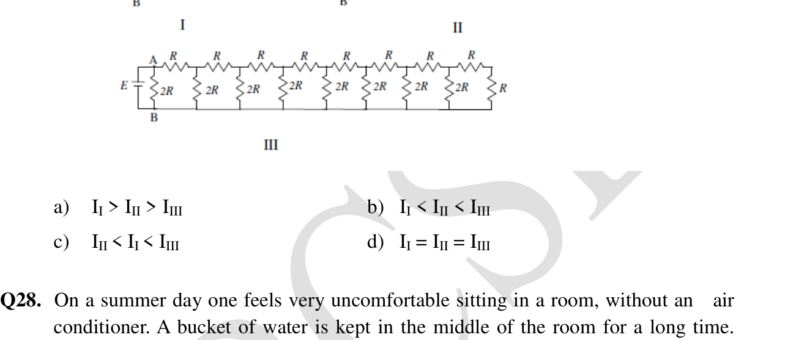
- (a)
- (b)
- (c)
- (d)
Topic: Circuits Metodi: Equivalent Circuit Reduction, Kirchhoff’s Laws Competenze: Physical Reasoning Objects: Battery, Resistor Fonte: Testo (PDF) — p.6
Tre circuiti diversi (I, II e III) sono costruiti utilizzando batterie e resistori identici di R e 2R ohm. Cosa si può dire della corrente I nel braccio AB di ogni circuito?
Quesito 27
- (a)
- (b)
- (c)
- (d)
Topic: Circuits Metodi: Equivalent Circuit Reduction, Kirchhoff’s Laws Competenze: Physical Reasoning Objects: Battery, Resistor Fonte: Testo (PDF) — p.6
On a summer day one feels very uncomfortable sitting in a room, without an air conditioner. A bucket of water is kept in the middle of the room for a long time. Room is thermally insulated from the outside environment.
Which of the following statement is/are correct?
i) If one puts her / his hand in the water, she / he feels water in the bucket to be cooler because the water is at a lower temperature than the surrounding. ii) If ice is brought into the room, the ice begins to melt and the room temperature begins to fall. The room temperature and the temperature of the water in the bucket will fall jointly. iv) Two persons enter the room. Person M is medically normal but person N has fever with body temperature 104°F. M claims that water kept in a bucket is warm but N claims that water is cool. Then the water temperature can be 39°C. [ Hint : Boiling point of water at normal pressure is 100°C = 212 °F. Freezing point of water at normal pressure is 0°C = 32 °F.]
- (a) ii, iii, and iv
- (b) i and iv
- (c) ii, iii
- (d) only iii
Topic: Thermodynamics Metodi: Physical Modeling Competenze: Physical Reasoning Objects: Container Fonte: Testo (PDF) — p.6
Un giorno d’estate si sente molto a disagio seduto in una stanza senza aria condizionata. Un secchio d’acqua viene tenuto in mezzo alla stanza per un lungo periodo. La stanza è termicamente isolata dall’ambiente esterno.
Qual è/sono corretta/sulla base delle seguenti affermazioni?
i) Se si mette la mano nell’acqua, si sente che l’acqua nel secchio è più fresca perché l’acqua è a una temperatura inferiore rispetto al di fuori. ii) Se viene introdotto ghiaccio nella stanza, il ghiaccio inizia a sciogliersi e la temperatura della stanza inizia a scendere. La temperatura della stanza e la temperatura dell’acqua nel secchio scenderanno insieme. iv) Entrano due persone nella stanza. La persona M è medicamente normale ma la persona N ha febbre con temperatura corporea 104° F. M afferma che l’acqua conservata in un secchio è calda ma N afferma che l’acqua è fresca. La temperatura dell’acqua può essere 39°C. [ Suggerimento: punto di ebollizione dell’acqua a pressione normale è 100°C = 212 °F. Il punto di congelamento dell’acqua a pressione normale è 0°C = 32 °F.]
- a) ii, iii e iv
- b) i e iv
- c) ii, iii
- d) solo iii
Topic: Thermodynamics Metodi: Physical Modeling Competenze: Physical Reasoning Objects: Container Fonte: Testo (PDF) — p.6
An optical system whose cross-section is shown below is constructed from two different glass isosceles wedges (each with a 30°-75°-75° cross section). The refractive indices of the two glasses are and respectively. A light beam is incident at an angle of 60° on face AB. The angle of emergence from the face CD is
Quesito 29
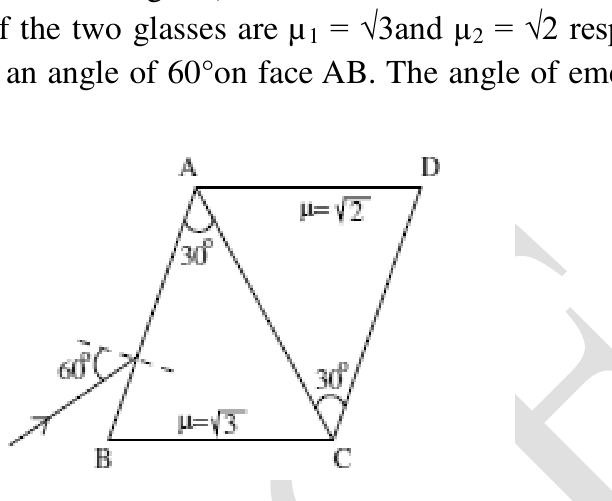
- (a) 0°
- (b) 45°
- (c) 15°
- (d) 30°
Topic: Geometric Optics Metodi: Snell’s Law, Ray Tracing Competenze: Physical Reasoning Objects: Prism Fonte: Testo (PDF) — p.7
Un sistema ottico la cui sezione trasversale è mostrata di seguito è costruito da due diverse cucine di vetro a isoscele (ogni una con una sezione trasversale 30°-75°-75°). Gli indici di rifrazione dei due bicchieri sono rispettivamente e . Un raggio luminoso è inciso ad un angolo di 60° sulla faccia AB. L’angolo di emergenza dal CD del viso è
Quesito 29
- (a) 0°
- (b) 45°
- (c) 15°
- (d) 30°
Topic: Geometric Optics Metodi: Snell’s Law, Ray Tracing Competenze: Physical Reasoning Objects: Prism Fonte: Testo (PDF) — p.7
The given diagram represents a dividing cell stained with pentea. From the options given below, identify the correct stage of cell division.
Quesito 30
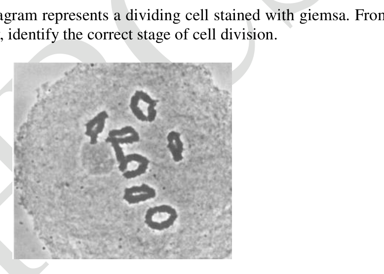
- (a) Leptotene
- (b) Zygotene
- (c) Pachytene
- (d) Diakinesis
Topic: Biology Metodi: Physical Modeling Competenze: Physical Reasoning Objects: — Fonte: Testo (PDF) — p.7
Il diagramma fornito rappresenta una cellula di divisione colorata di pentea. Dalle opzioni di seguito indicate, identificare la fase corretta di divisione cellulare.
Quesito 30
- a) Leptotene
- b) Zigotene
- (c) Pachytene
- d) Diakinesis
Topic: Biology Metodi: Physical Modeling Competenze: Physical Reasoning Objects: — Fonte: Testo (PDF) — p.7
The electrolysis of aqueous NaOH solution yields
- (a) Na at cathode, at anode
- (b) at cathode, at anode
- (c) at anode, at cathode
- (d) Na at anode, at cathode
Topic: Chemistry Metodi: Physical Modeling Competenze: Physical Reasoning Objects: — Fonte: Testo (PDF) — p.7
L’elettrolisi della soluzione acquosa di NaOH produce
- a) Na al catodo, all’anodo
- b) al catodo, all’anodo
- c) all’anodo, al catodo
- (d) Na all’anodo, al catodo
Topic: Chemistry Metodi: Physical Modeling Competenze: Physical Reasoning Objects: — Fonte: Testo (PDF) — p.7
A white crystalline salt P reacts with dilute HCl to liberate a suffocating gas Q and also forms a yellow precipitate. The gas Q turns potassium dichromate acidified with to a green coloured solution R. P, Q and R are?
- (a) P: , Q: , R:
- (b) P: , Q: , R:
- (c) P: , Q: , R:
- (d) P: , Q: , R:
Topic: Chemistry Metodi: Physical Modeling Competenze: Physical Reasoning Objects: — Fonte: Testo (PDF) — p.8
Un sale cristallino bianco P reagisce con HCl diluito per liberare un gas soffocante Q e forma anche un precipitato giallo. Il gas Q trasforma il dichromato di potassio acidificato con in una soluzione di colore verde R. - P, Q e R sono?
- (a) P: , Q: , R:
- (b) P: , Q: , R:
- (c) P: , Q: , R:
- (d) P: , Q: , R:
Topic: Chemistry Metodi: Physical Modeling Competenze: Physical Reasoning Objects: — Fonte: Testo (PDF) — p.8
Of the four figures given below, is known value of the outcome in an experiment. Which of the following data plot a precise but not an accurate measurement?
Quesito 33
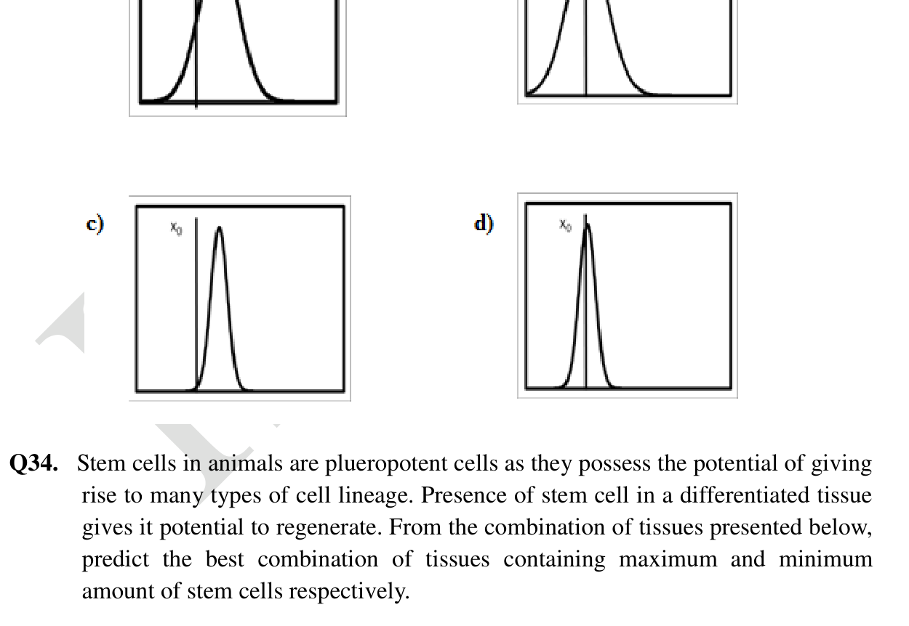
Topic: Mathematics Metodi: Experimental Data Analysis Competenze: Experimental Data Analysis Objects: — Fonte: Testo (PDF) — p.8
Tra le quattro cifre indicate di seguito, è il valore noto del risultato di un esperimento. Quali dei seguenti dati indicano una misurazione precisa ma non accurata?
Quesito 33
Topic: Mathematics Metodi: Experimental Data Analysis Competenze: Experimental Data Analysis Objects: — Fonte: Testo (PDF) — p.8
Stem cells in animals are plueropotent cells as they possess the potential of giving rise to many types of cell lineage. Presence of stem cell in a differentiated tissue gives it potential to regenerate. From the combination of tissues presented below, predict the best combination of tissues containing maximum and minimum amount of stem cells respectively.
- (a) Brain and kidney
- (b) Kidney and brain
- (c) Brain and liver
- (d) Liver and brain
Topic: Biology Metodi: Physical Modeling Competenze: Physical Reasoning Objects: — Fonte: Testo (PDF) — p.8
Le cellule staminali negli animali sono cellule plueropotenti in quanto possiedono il potenziale di dare origine a molti tipi di linia cellulare. La presenza di cellule staminali in un tessuto differenziato le dà il potenziale di rigenerarsi. Dalla combinazione di tessuti presentata di seguito, prevedi la migliore combinazione di tessuti contenenti rispettivamente quantità massima e minima di cellule staminali.
- (a) Cervello e reni
- (b) Reni e cervello
- c) Cervello e fegato
- (d) Fefto e cervello
Topic: Biology Metodi: Physical Modeling Competenze: Physical Reasoning Objects: — Fonte: Testo (PDF) — p.8
For a normal unaided eye the least converging power of the eye lens behind the cornea is 20D and the cornea itself has some converging power. The distance between the retina and the cornea-eye lens can be approximated to 5/3cm. Converging power of the cornea is given by:
- (a) 2.5 D
- (b) 40 D
- (c) 60 D
- (d) 19.4 D
Topic: Geometric Optics Metodi: Thin Lens & Mirror Equation Competenze: Physical Reasoning Objects: Lens Fonte: Testo (PDF) — p.9
Per un occhio normale senza occhi ciechi la potenza di convergenza minima della lente oculare dietro la cornea è di 20D e la cornea stessa ha una certa potenza di convergenza. La distanza tra la retina e la lente cornea-occhio può essere approssimata a 5/3 cm. La potenza di conversione della cornea è data da:
- (a) 2.5 D
- (b) 40 D
- (c) 60 D
- (d) 19.4 D
Topic: Geometric Optics Metodi: Thin Lens & Mirror Equation Competenze: Physical Reasoning Objects: Lens Fonte: Testo (PDF) — p.9
Given below are few forces of evolution. Which of the following would be the best combination of primary forces of evolution?
- (a) Variation and mutation
- (b) Mutation and isolation
- (c) Variation and migration
- (d) Migration and random genetic drift
Topic: Biology Metodi: Physical Modeling Competenze: Physical Reasoning Objects: — Fonte: Testo (PDF) — p.9
Qui sotto sono indicate poche forze dell’evoluzione. Quale delle seguenti sarebbe la migliore combinazione delle forze primarie dell’evoluzione?
- a) Variazione e mutazione
- b) Mutazione e isolamento
- c) Variazione e migrazione
- d) Migrazione e deriva genetica casuale
Topic: Biology Metodi: Physical Modeling Competenze: Physical Reasoning Objects: — Fonte: Testo (PDF) — p.9
How many molecules of water of hydration are present in 252mg of oxalic acid ()?
- (a)
- (b)
- (c)
- (d)
Topic: Chemistry Metodi: Statistical Averaging Competenze: Unit Conversion Objects: — Fonte: Testo (PDF) — p.9
Quante molecole di acqua di idratazione sono presenti in 252 mg di acido ossalico ()?
- (a)
- (b)
- (c)
- (d)
Topic: Chemistry Metodi: Statistical Averaging Competenze: Unit Conversion Objects: — Fonte: Testo (PDF) — p.9
Which of the process increases in the absence of light in plants?
- (a) Rate of uptake of minerals
- (b) Rate of uptake of water
- (c) Rate of ascent of sap
- (d) Elongation of internodes
Topic: Biology Metodi: Physical Modeling Competenze: Physical Reasoning Objects: — Fonte: Testo (PDF) — p.9
Quale processo aumenta in assenza di luce nelle piante?
- a) Tasso di assorbimento dei minerali
- b) Tasso di assorbimento dell’acqua
- (c) Tasso di ascesa della sazza
- d) allungamento degli internodi
Topic: Biology Metodi: Physical Modeling Competenze: Physical Reasoning Objects: — Fonte: Testo (PDF) — p.9
In the following circuit the ammeter is ideal and reads zero. Value of resistance R is
Quesito 39
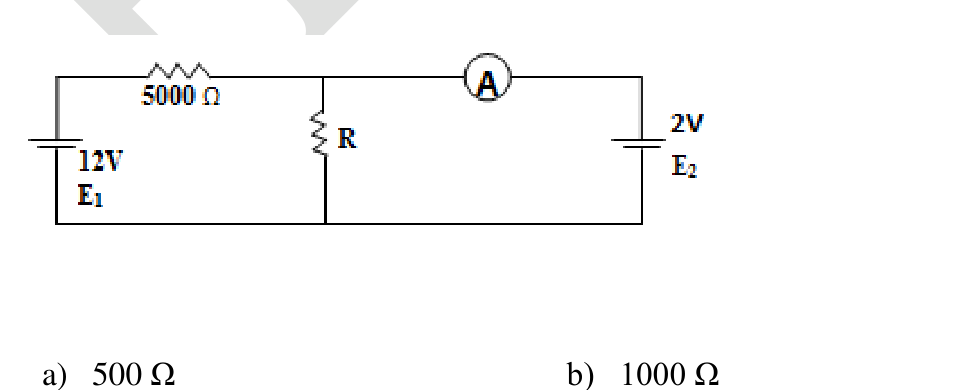
- (a) 500 Ω
- (b) 1000 Ω
- (c) 25000 Ω
- (d) 0.5 Ω
Topic: Circuits Metodi: Kirchhoff’s Laws Competenze: Physical Reasoning Objects: Resistor Fonte: Testo (PDF) — p.9
Nel circuito successivo l’ampilometro è ideale e si legge zero. Valore di resistenza R è
Quesito 39
- (a) 500 Ω
- (b) 1000 Ω
- (c) 25000 Ω
- (d) 0.5 Ω
Topic: Circuits Metodi: Kirchhoff’s Laws Competenze: Physical Reasoning Objects: Resistor Fonte: Testo (PDF) — p.9
Few statements related to genetic drift are given below. Find out the incorrect statement among the four.
- (a) There is a random change in the allele frequency in a given population.
- (b) It is significant only in large population.
- (c) It is a mechanism for evolution of new species.
- (d) It may or may not help a species to adapt.
Topic: Biology Metodi: Physical Modeling Competenze: Physical Reasoning Objects: — Fonte: Testo (PDF) — p.10
Quasi tutte le affermazioni relative alla deriva genetica sono riportate di seguito. Scopri la dichiarazione incorrecta tra le quattro.
- (a) C’è un cambiamento casuale nella frequenza degli alleli in una determinata popolazione.
- b) È significativo solo in una popolazione numerosa.
- (c) Si tratta di un meccanismo di evoluzione di nuove specie.
- d) Può o non può aiutare una specie ad adattarsi.
Topic: Biology Metodi: Physical Modeling Competenze: Physical Reasoning Objects: — Fonte: Testo (PDF) — p.10
For the reaction
The expression of equilibrium constant can be written as
Where all the concentrations are equilibrium concentrations. Before approaching equilibrium, the same concentration ratio is called reaction quotient .
For the reaction system to reach equilibrium
- (a) must increase in the reaction
- (b) must decrease in the reaction
- (c)
- (d) = zero
Topic: Chemistry Metodi: Physical Modeling Competenze: Physical Reasoning Objects: — Fonte: Testo (PDF) — p.10
Per la reazione
L’espressione di costante di equilibrio può essere scritta come
Dove tutte le concentrazioni sono concentrazioni di equilibrio. Prima di avvicinarsi all’equilibrio, lo stesso rapporto di concentrazione è chiamato quotiente di reazione .
Per raggiungere l’equilibrio del sistema di reazione
- a) deve aumentare la reazione
- b) deve diminuire la reazione
- (c)
- (d) = zero
Topic: Chemistry Metodi: Physical Modeling Competenze: Physical Reasoning Objects: — Fonte: Testo (PDF) — p.10
Child drinks a liquid of density d through a vertical straw. Atmospheric pressure is and the child is capable of lowering the pressure at the top of the straw by 10%. The acceleration of the free fall is g. What is the maximum length of straw that would enable the child to drink the liquid?
- (a)
- (b)
- (c)
- (d)
Topic: Fluid Mechanics Metodi: Hydrostatic Equilibrium Competenze: Physical Reasoning Objects: Tube Fonte: Testo (PDF) — p.10
Il bambino beve un liquido di densità d attraverso una paglia verticale. La pressione atmosferica è e il bambino è in grado di abbassare la pressione in cima alla cannuccia del 10%. L’accelerazione della caduta libera è g. Qual è la lunghezza massima della paglia che permetterebbe al bambino di bere il liquido?
- (a)
- (b)
- (c)
- (d)
Topic: Fluid Mechanics Metodi: Hydrostatic Equilibrium Competenze: Physical Reasoning Objects: Tube Fonte: Testo (PDF) — p.10
In Haber’s process 0.240 mole of Nitrogen, 3.9 moles of hydrogen are taken which lead to the formation of 7.8 moles product in a 3.00 liters of reaction vessel at 375°C. Considering that equilibrium constant at this temperature is 41.2 Calculate the value of reaction quotient (Q) and predict whether the reaction is in equilibrium or it will proceed in either direction.
- (a) Q = 38.62 and reaction will be in equilibrium.
- (b) Q = 19.31 and reaction will proceed in forward direction.
- (c) Q = 38.62 and reaction will proceed in forward direction.
- (d) Q = 19.31 and reaction will proceed in backward direction.
Topic: Chemistry Metodi: Physical Modeling Competenze: Physical Reasoning Objects: — Fonte: Testo (PDF) — p.10
Nel processo di Haber, 0,240 mol di azoto, vengono prelevati 3,9 mol di idrogeno che portano alla formazione di un prodotto di 7,8 mol in un recipiente di reazione di 3,00 litri a 375°C. Considerando che la costante di equilibrio a questa temperatura è 41,2 Calcola il valore del quotiente di reazione (Q) e prevedi se la reazione è in equilibrio o se proseguirà in entrambe le direzioni.
- (a) Q = 38,62 e la reazione sarà in equilibrio.
- b) Q = 19,31 e la reazione proseguirà in direzione anteriore.
- (c) Q = 38,62 e la reazione procederà in direzione anteriore.
- (d) Q = 19,31 e la reazione procederà in direzione anteriore.
Topic: Chemistry Metodi: Physical Modeling Competenze: Physical Reasoning Objects: — Fonte: Testo (PDF) — p.10
Variation of the concentration of the reactant (X) and the product (Y) are shown in the figure. Select the correct statement.
Quesito 44
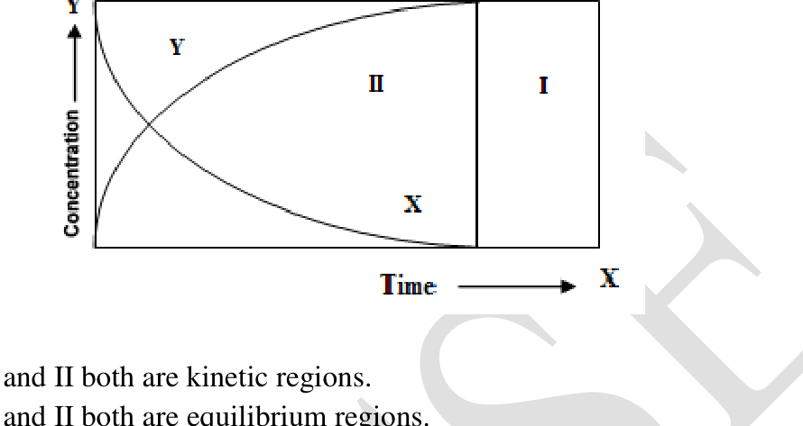
- (a) I and II both are kinetic regions.
- (b) I and II both are equilibrium regions.
- (c) I is equilibrium and II is kinetic region.
- (d) I is kinetic and II is equilibrium region.
Topic: Chemistry Metodi: Experimental Data Analysis Competenze: Diagrammatic Reasoning Objects: — Fonte: Testo (PDF) — p.11
La variazione della concentrazione del reagente (X) e del prodotto (Y) è mostrata nella figura. Selezionare la frase corretta.
Quesito 44
- a) I e II sono entrambe regioni cinetiche.
- b) I e II sono entrambe regioni di equilibrio.
- (c) I è equilibrio e II è regione cinetica.
- (d) I è cinetico e II è regione di equilibrio.
Topic: Chemistry Metodi: Experimental Data Analysis Competenze: Diagrammatic Reasoning Objects: — Fonte: Testo (PDF) — p.11
A ball falls from rest through air and eventually reaches a constant velocity. For this fall, force X and Y vary with time as shown.
Quesito 45
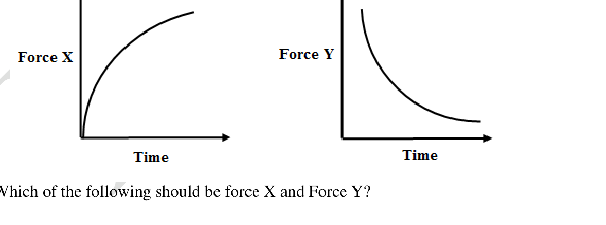
Which of the following should be force X and Force Y?
| Force X | Force Y | |
|---|---|---|
| (a) | Air Resistance | Resultant Force |
| (b) | Air Resistance | Weight |
| (c) | Up thrust | Resultant Force |
| (d) | Up thrust | Weight |
Topic: Newtonian Mechanics Metodi: Free-Body Diagram Competenze: Diagrammatic Reasoning Objects: Ball Fonte: Testo (PDF) — p.11
Una palla cade dal riposo attraverso l’aria e alla fine raggiunge una velocità costante. Per questo autunno, le forze X e Y variano con il tempo come mostrato.
Quesito 45
Quale delle seguenti dovrebbe essere la forza X e la forza Y?
Forza X # Forza Y
|---|---|---|
La resistenza aerea # # la forza risultante
B. # Resistenza all’aria # Peso
♬ (c) ♬ Supra spinta ♬ Forza risultante ♬
Scalda il peso
Topic: Newtonian Mechanics Metodi: Free-Body Diagram Competenze: Diagrammatic Reasoning Objects: Ball Fonte: Testo (PDF) — p.11
A person is riding a bicycle in vertical portion accelerating forward without slipping on a straight horizontal road. What is / are the direction (s) of the total force exerted by the road on front (P) and the rear (Q) wheel?
Quesito 46
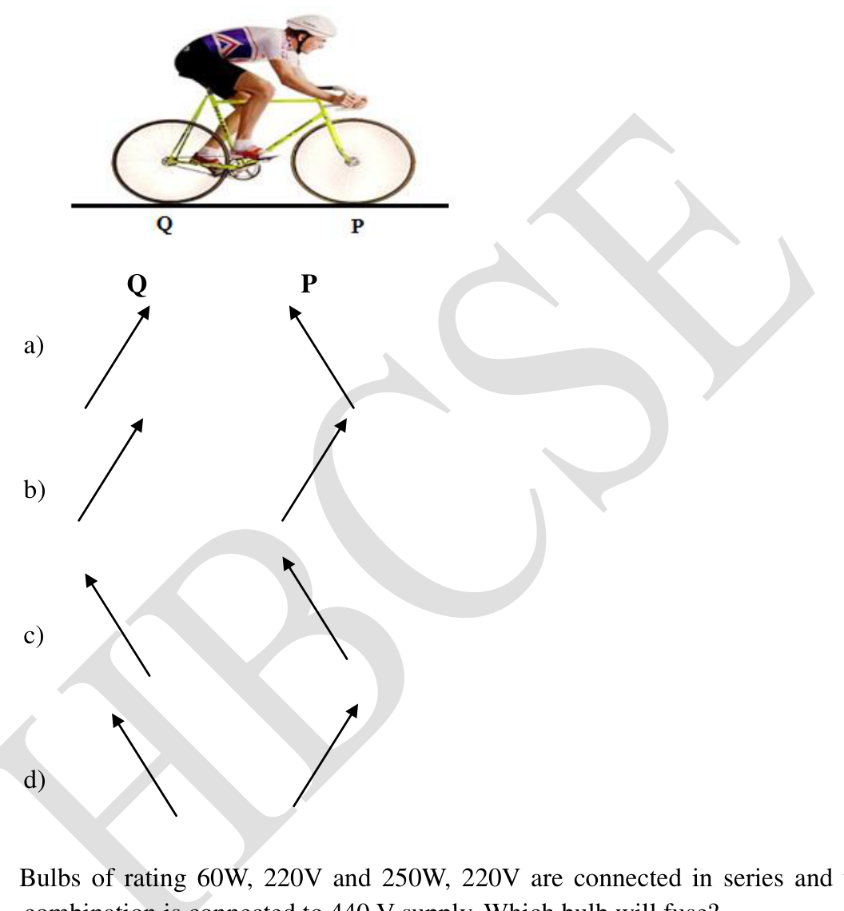
Topic: Newtonian Mechanics Metodi: Free-Body Diagram Competenze: Diagrammatic Reasoning Objects: Wheel Fonte: Testo (PDF) — p.12
Una persona sta guidando una bicicletta in parte verticale che accelera in avanti senza scivolare su una strada orizzontale dritta. Qual è/sono la direzione (s) della forza totale esercitata dalla strada sulla ruota anteriore (P) e posteriore (Q)?
Quesito 46
Topic: Newtonian Mechanics Metodi: Free-Body Diagram Competenze: Diagrammatic Reasoning Objects: Wheel Fonte: Testo (PDF) — p.12
Bulbs of rating 60W, 220V and 250W, 220V are connected in series and their combination is connected to 440 V supply. Which bulb will fuse?
- (a) 60W
- (b) 250 W
- (c) Both
- (d) Neither.
Topic: Circuits Metodi: Equivalent Circuit Reduction Competenze: Physical Reasoning Objects: — Fonte: Testo (PDF) — p.12
Le lampadine di 60W, 220V e 250W, 220V sono collegate in serie e la loro combinazione è collegata a 440 V. Quale lampadina si fonderà?
- (a) 60W
- (b) 250 W
- (c) Entrambe le parti
- (d) Neanche.
Topic: Circuits Metodi: Equivalent Circuit Reduction Competenze: Physical Reasoning Objects: — Fonte: Testo (PDF) — p.12
At 5 atm pressure gas dissociates by 10%. What will be the value of at same temperature?
- (a) 0.045 atm
- (b) 0.050 atm
- (c) 0.9 atm
- (d) 0.5 atm
Topic: Chemistry Metodi: Physical Modeling Competenze: Physical Reasoning Objects: Gas Fonte: Testo (PDF) — p.12
A 5 atm il gas si dissocia del 10%. Qual è il valore di alla stessa temperatura?
- a) 0,045 atm
- b) 0,050 atm
- c) 0,9 atm
- d) 0,5 atm
Topic: Chemistry Metodi: Physical Modeling Competenze: Physical Reasoning Objects: Gas Fonte: Testo (PDF) — p.12
Out of the two X chromosomes of human female, one X chromosomes is inactivated and heterochromatinized. The inactive X chromosome can be seen as a darkly stained spot and is called as Barr body. Identify the number of Barr bodies that would be seen in the following genotypes
| 46 XO | 46 XY | 46 XXY | 46 XXXY | |
|---|---|---|---|---|
| (a) | 0,1,1,2 | |||
| (b) | 0,0,1,2 | |||
| (c) | 0,1,2,3 | |||
| (d) | 0,0,1,1 |
Topic: Biology Metodi: Physical Modeling Competenze: Physical Reasoning Objects: — Fonte: Testo (PDF) — p.13
Dei due cromosomi X delle femmine umane, uno dei cromosomi X viene inattivato e eterocromatinizato. Il cromosoma X inattivo può essere visto come un punto macchiato scuro e viene chiamato corpo di Barr. Identificare il numero di corpi Barr che si vedrebbero nei seguenti genotipi
➡️Gesù è il mio Dio. ➡️Gesù è il mio Dio. |---|---|---|---|---| | (a) | 0,1,1,2 | | | | | (b) | 0,0,1,2 | | | | | (c) | 0,1,2,3 | | | | | (d) | 0,0,1,1 | | | |
Topic: Biology Metodi: Physical Modeling Competenze: Physical Reasoning Objects: — Fonte: Testo (PDF) — p.13
Which of the following is an example of active acquired immunity?
- (a) Nursing mother transfers some antibodies to infant through colostrum (Breast milk).
- (b) Person recovered from measles does not get measles again
- (c) Injection of antitetanus is given after injury.
- (d) We do not suffer from Distemper, a fatal canine disease.
Topic: Biology Metodi: Physical Modeling Competenze: Physical Reasoning Objects: — Fonte: Testo (PDF) — p.13
Quale di queste è un esempio di immunità attiva acquista?
- (a) La madre che allattano trasmette alcuni anticorpi al bambino attraverso il colostro (latto materno).
- (b) La persona guarita dal morbillo non ricompone il morbillo
- (c) Iniezione di antitetano è somministrata dopo lesione.
- (d) Non soffriamo di Distemper, una malattia canina fatale.
Topic: Biology Metodi: Physical Modeling Competenze: Physical Reasoning Objects: — Fonte: Testo (PDF) — p.13
The heat of formation of carbon dioxide is and that of water is . Any hydrocarbon on combustion gives carbon dioxide and water. Ethyne is a hydrocarbon whose formula is . Heat of combustion of ethyne is . With the above data predict what will be the heat of formation of ethyne.
- (a)
- (b)
- (c)
- (d)
Topic: Thermodynamics, Chemistry Metodi: First Law of Thermodynamics Competenze: Physical Reasoning Objects: — Fonte: Testo (PDF) — p.13
Il calore di formazione di anidride carbonica è e quello dell’acqua è . Qualsiasi idrocarbolagene a combustione dà anidride carbonica e acqua. L’etiene è un idrocarburi la cui formula è . Il calore di combustione dell’etione è . Con i dati sopra indicati, prevedi il calore di formazione dell’etione.
- (a)
- (b)
- (c)
- (d)
Topic: Thermodynamics, Chemistry Metodi: First Law of Thermodynamics Competenze: Physical Reasoning Objects: — Fonte: Testo (PDF) — p.13
An overhead crane is being erected to construct a multi storied building. The horizontal arm of the crane has a linear mass density of 100 kg/m and is 50 m in length. Its short arm on the opposite side of the support is 5 m long. A pulley block on the long arm, which can be moved along the arm, weighs 500 kg. Ignore the mass of the vertical frame. The vertical frame will twist and break if there is an excess imbalance of more than 10 percent. What is the minimum counter balance required on the short arm which is to be installed on a permanent basis.
- (a) 27000 kg
- (b) 29750 kg
- (c) 26750 kg
- (d) 25000 kg
Topic: Rigid Body Statics Metodi: Torque & Angular Momentum Analysis Competenze: Physical Reasoning Objects: Beam, Pulley Fonte: Testo (PDF) — p.13
Una gru a testa alta viene eretta per costruire un edificio a più piani. Il braccio orizzontale della gru ha una densità di massa lineare di 100 kg/m ed è lungo 50 m. Il suo braccio corto, sul lato opposto del supporto, è lungo 5 m. Un blocco di pollice sul braccio lungo, che può essere spostato lungo il braccio, pesa 500 kg. Ignora la massa della cornice verticale. La cornice verticale si torcerà e si romperà se c’è un squilibrio eccessivo di più del 10 percento. Qual è il bilanciamento minimo di contatto richiesto sul braccio corto che deve essere installato in modo permanente.
- (a) 27000 kg
- (b) 29750 kg
- (c) 26750 kg
- (d) 25000 kg
Topic: Rigid Body Statics Metodi: Torque & Angular Momentum Analysis Competenze: Physical Reasoning Objects: Beam, Pulley Fonte: Testo (PDF) — p.13
One set of plants was grown at 12 h day and 12 h night period cycles and it flowered. While for another set of the same plant, the night period was interrupted by a flash of light at mid night and it did not flower. The plants used for the above set of experiments are
- (a) Long day plant
- (b) Day neutral plant
- (c) Short day plant
- (d) Darkness neutral plant
Topic: Biology Metodi: Physical Modeling Competenze: Physical Reasoning Objects: — Fonte: Testo (PDF) — p.14
Un insieme di piante è stato coltivato a 12 ore di giorno e 12 ore di notte e ha fiorito. Mentre per un altro insieme della stessa pianta, il periodo notturno è stato interrotto da un lampo di luce a mezzanotte e non ha fiorito. Le piante utilizzate per la serie di esperimenti di cui sopra sono:
- a) Pianta di lunga durata
- b) Pianta neutrale di giorno
- (c) Pianta di breve durata
- d) Pianta neutrale nell’oscurità
Topic: Biology Metodi: Physical Modeling Competenze: Physical Reasoning Objects: — Fonte: Testo (PDF) — p.14
Mayuri was performing thermometric titration of a weak base 100 ml of 1 M sulphuric acid and started adding 1M calcium hydroxide and she plotted a graph of temperature vs volume of the titrant added. In that experiment she found that temperature was initially increasing and then it started decreasing. The maximum of the graph is obtained at 100 ml. Calcium hydroxide. What will be the enthalpy change of this reaction.[ Given kcal for equivalent.]
Quesito 54
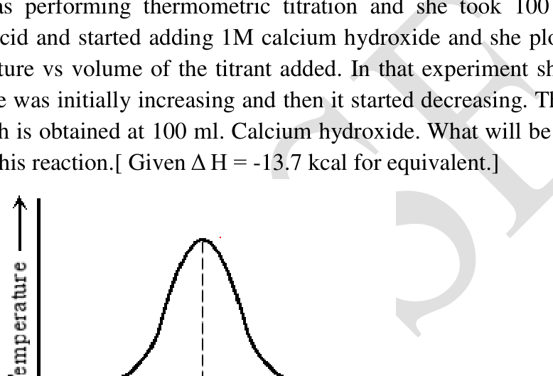
- (a) kcal
- (b) kcal
- (c) kcal
- (d) kcal
Topic: Thermodynamics, Chemistry Metodi: First Law of Thermodynamics Competenze: Unit Conversion Objects: — Fonte: Testo (PDF) — p.14
Mayuri stava eseguendo la titolazione termometrica di una base debole 100 ml di 1 M di acido solforico e ha iniziato ad aggiungere 1 M di idrossido di calcio e ha tracciato un grafico della temperatura vs volume del titrante aggiunto. In quell’esperimento ha scoperto che la temperatura iniziava ad aumentare e poi iniziava a diminuire. Il massimo del grafico è ottenuto a 100 ml. Idrossido di calcio. Qual è il cambiamento di entalpia di questa reazione.[ Date kcal per equivalente.]
Quesito 54
- a) kcal
- b) kcal
- (c) kcal
- (d) kcal
Topic: Thermodynamics, Chemistry Metodi: First Law of Thermodynamics Competenze: Unit Conversion Objects: — Fonte: Testo (PDF) — p.14
BSA was injected into rabbit as antigen and polyclonal antibody was obtained. From this polyclonal antisera IgG fraction was purified by standard methods. If the same lot of IgG polyclonal antibodies are digested either with Pepsin or papain and subsequently incubated with the antigen (BSA), find out correct option from the following.
- (a) Pepsin digested IgG will precipitate the antigen.
- (b) Papain digested antibody will precipitate the antigen.
- (c) Both the antibody will precipitate antigen.
- (d) None of these will precipitate.
Topic: Biology Metodi: Physical Modeling Competenze: Physical Reasoning Objects: — Fonte: Testo (PDF) — p.14
BSA è stato iniettato al coniglio ottenendo un anticorpo antigeno e policlonico. Da questa antiserina policlona la frazione IgG è stata purificata con metodi standard. Se lo stesso lotto di anticorpi policlonici IgG viene digerito con Pepsin o papaina e successivamente incubato con l’ antigene (BSA), scopri la scelta corretta da quanto segue.
- (a) L’ IgG digerito da pepsina precipiterà l’ antigene.
- (b) L’ anticorpo digerito da papain precipiterà l’ antigene.
- (c) Entrambi gli anticorpi precipiteranno l’ antigene.
- (d) Nessuna di queste precipiterà.
Topic: Biology Metodi: Physical Modeling Competenze: Physical Reasoning Objects: — Fonte: Testo (PDF) — p.14
Assertion (A): If the volume of the vessel is doubled then for the following reaction.
Equilibrium constant is decreased. Reason (R): The volume of sulphuric acid required to produce colour change for two indicators is different :
- (a) Both (A) and (R) are true and (R) is the correct explanation of (A).
- (b) Both (A) and (R) are true and (R) is not the correct explanation of (A).
- (c) (A) is true but (R) is false.
- (d) (A) is false but (R) is true.
Topic: Chemistry Metodi: Physical Modeling Competenze: Physical Reasoning Objects: Gas Fonte: Testo (PDF) — p.15
Asserzione (A): se il volume del recipiente è raddoppiato, si ottiene la seguente reazione.
La costante di equilibrio è diminuita. Ragione (R): il volume di acido solforico necessario per produrre un cambiamento di colore per due indicatori è diverso:
- (a) Entrambe le (A) e (R) sono vere e (R) è la corretta spiegazione di (A).
- (b) Entrambe le (A) e le (R) sono vere e (R) non è la corretta spiegazione di (A).
- (c) (A) è vero ma (R) è falso.
- (d) (A) è falso ma (R) è vero.
Topic: Chemistry Metodi: Physical Modeling Competenze: Physical Reasoning Objects: Gas Fonte: Testo (PDF) — p.15
Assertion (A): Sodium carbonate can be titrated against sulphuric acid by using either phenolphthalein or methyl orange as indicator. Reason (R): The volume of sulphuric acid required to produce colour change for two indicators is different :
- (a) Both (A) and (R) are true and (R) is the correct explanation of (A).
- (b) Both (A) and (R) are true and (R) is not the correct explanation of (A).
- (c) (A) is true but (R) is false.
- (d) (A) is false but (R) is true.
Topic: Chemistry Metodi: Physical Modeling Competenze: Physical Reasoning Objects: — Fonte: Testo (PDF) — p.15
Asserzione (A): il carbonato di sodio può essere titolato contro l’acido solforico utilizzando la fenolftalaina o l’arancia metile come indicatore. Ragione (R): il volume di acido solforico necessario per produrre un cambiamento di colore per due indicatori è diverso:
- (a) Entrambe le (A) e (R) sono vere e (R) è la corretta spiegazione di (A).
- (b) Entrambe le (A) e le (R) sono vere e (R) non è la corretta spiegazione di (A).
- (c) (A) è vero ma (R) è falso.
- (d) (A) è falso ma (R) è vero.
Topic: Chemistry Metodi: Physical Modeling Competenze: Physical Reasoning Objects: — Fonte: Testo (PDF) — p.15
is the resultant of and . Their respective magnitudes are C, A and B. Select correct statement.
- (a) C may be equal to A.
- (b) C > A and C > B.
- (c) C = A + B.
- (d) C cannot be smaller than of A and B.
Topic: Newtonian Mechanics Metodi: Vector Decomposition Competenze: Physical Reasoning Objects: — Fonte: Testo (PDF) — p.15
è la risultante di e . Le loro rispettive magnitudini sono C, A e B. Selezionare la dichiarazione corretta.
- (a) C può essere uguale a A.
- (b) C > A e C > B.
- (c) C = A + B.
- (d) C non può essere inferiore a A e B.
Topic: Newtonian Mechanics Metodi: Vector Decomposition Competenze: Physical Reasoning Objects: — Fonte: Testo (PDF) — p.15
T.H. Morgan discovered that all the genes in Drosophila are linked to four pairs of linkage groups which correspond to 4 pairs of chromosomes. Sometimes, the linkage of some genes, present at some specific distance, is broken and they show independent assortment. The most plausible reason for brake in the concept of linkage would be
- (a) Transposition
- (b) Recombination
- (c) Translocation
- (d) Sister-chromatid exchange
Topic: Biology Metodi: Physical Modeling Competenze: Physical Reasoning Objects: — Fonte: Testo (PDF) — p.15
T.H. Morgan ha scoperto che tutti i geni di Drosophila sono legati a quattro coppie di gruppi di legame che corrispondono a 4 coppie di cromosomi. A volte, il legame di alcuni geni, presenti a una certa distanza specifica, viene rotto e mostrano assortimento indipendente. La ragione più plausibile per il frenamento nel concetto di collegamento sarebbe
- a) Trasposizione
- b) Ricombinazione
- (c) Traslocazione
- (d) Scambio di cromatidi sorelle
Topic: Biology Metodi: Physical Modeling Competenze: Physical Reasoning Objects: — Fonte: Testo (PDF) — p.15
A smooth flat horizontal turntable 4.0 m in diameter is rotating at 0.050 revs per second. A student at the centre of the turntable, and rotating with it. Places a smooth flat puck on the turntable 0.50 m from the edge. Which of the following figures describes the motion of the puck as seen by a stationary observer who is standing at the side of the turntable and above the turntable?
Quesito 60
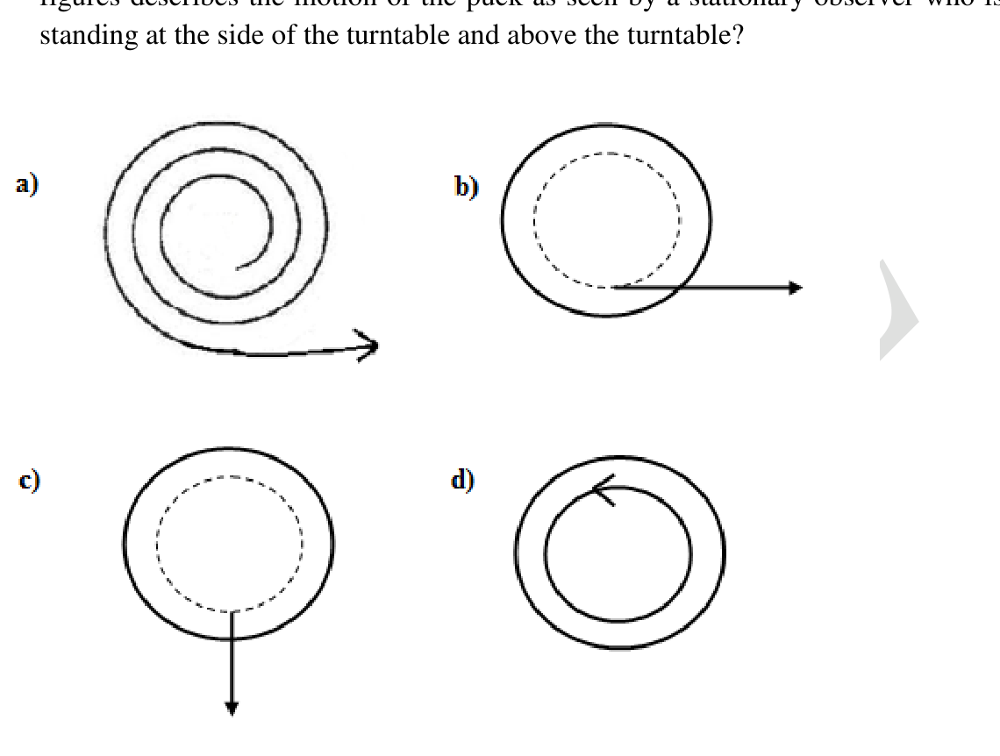
Topic: Newtonian Mechanics Metodi: Physical Modeling Competenze: Diagrammatic Reasoning Objects: Disk Fonte: Testo (PDF) — p.16
Una piatta rotatoria orizzontale liscia di 4,0 m di diametro ruota a 0,050 giri al secondo. Uno studente al centro della scheda, e ruota con essa. Si colloca un disco liscio e piatto sulla scheda a 0,50 m dal bordo. Quale delle seguenti figure descrive il movimento del disco come visto da un osservatore fermo che sta al fianco della scheda e sopra la scheda?
Quesito 60
Topic: Newtonian Mechanics Metodi: Physical Modeling Competenze: Diagrammatic Reasoning Objects: Disk Fonte: Testo (PDF) — p.16
Section B (long questions) — Questions 61 to 68 are of 5 marks each. Marks will be indicated in the questions if there are more than one part to it.
Four stars A, B, C, D are in space so that the distances (in light years) between them are given by AB = 6, BC = 8, AC = 10, AD = 8 and CD = 6. Find the maximum and minimum possible distances between B and D. [5 Marks]
Topic: Astrophysics, Mathematics Metodi: Physical Modeling Competenze: Mathematical Modeling Objects: Star Fonte: Testo (PDF) — p.16
**Sezione B (pieghe domande) ** Le domande da 61 a 68 sono di 5 punti ciascuno. Le domande indicano i segni se sono costituite da più di una parte.
Quattro stelle A, B, C, D sono nello spazio in modo che le distanze (in anni luce) tra loro sono indicate da AB = 6, BC = 8, AC = 10, AD = 8 e CD = 6. Trova le distanze massime e minime possibili tra B e D. ** [5 Marchi] **
Topic: Astrophysics, Mathematics Metodi: Physical Modeling Competenze: Mathematical Modeling Objects: Star Fonte: Testo (PDF) — p.16
In the A, B and O blood grouping system, the blood group ‘O’ is recessive to ‘A’ and ‘B’ and ‘A’ and ‘B’ are co-dominant. Three alleles, namely, , and represent the “A, B and O” system of blood grouping.
Answer the following questions given below.
i. X (Female) is married to Y (Male). They have three children: P (male child), Q (male child) and R (female child). The blood group of X and Y is ‘A’ and ‘B’ respectively. If the blood groups of P and R is ‘B’ and Q is ‘AB’, predict the possible genotypes for blood groups of all the five members of the family. [2 Marks]
ii. What will be the possible phenotypes and genotypes of the off-springs if the father has ‘O’ blood group and the mother has ‘A’ blood group? [0.5 Marks]
iii. Given below are different blood groups and their genotypes. Find out and write the antigens present on the RBC surface for each blood group (viz: A antigen or B antigen or nil antigen) and the antibody produced in the serum of each blood group (viz: anti-A or anti-B or nil antibody) in the table provided below. [2 Marks]
| BLOOD GROUP PHENOTYPE | GENOTYPE | ANTIGEN ON THE SURFACE OF RBC | SERUM ANTIBODY |
|---|---|---|---|
| O | |||
| A | or | ||
| B | or | ||
| AB |
iv. Which combinations of the following blood groups are the universal donors and universal recipients respectively? The letter A, B, O represent the blood group and +ve and –ve represent the Rh factor. [0.5 Marks]
- (a) O +ve and AB +ve
- (b) O +ve and AB –ve
- (c) O –ve and AB +ve
- (d) O –ve and AB +ve
Topic: Biology Metodi: Physical Modeling Competenze: Physical Reasoning Objects: — Fonte: Testo (PDF) — p.17
Nel sistema di gruppo sanguigno A, B e O, il gruppo sanguigno ‘O’ è recessivo a ‘A’ e ‘B’ e ‘A’ e ‘B’ sono co-dominanti. Tre alleli, vale a dire , e rappresentano il sistema di gruppo sanguigno “A, B e O”.
Rispondere alle seguenti domande.
i. X (Femminile) è sposato con Y (Maschio). Hanno tre figli: P (figlio maschio), Q (figlio maschio) e R (figlio femmina). Il gruppo sanguigno di X e Y è rispettivamente “A” e “B”. Se i gruppi sanguigni di P e R sono ‘B’ e Q è ‘AB’, prevedete i possibili genotipi per i gruppi sanguigni di tutti e cinque i membri della famiglia. ** [2 Marchi] **
ii. Quali saranno i possibili fenotipi e genotipi dei figli se il padre ha il gruppo sanguigno “O” e la madre ha il gruppo sanguigno “A”? **[0,5 punti] **
iii. Qui di seguito sono indicati i diversi gruppi sanguigni e i loro genotipi. Scopri e scrivi gli antigeni presenti sulla superficie del CCR per ciascun gruppo sanguigno (ad es. Antigene A o Antigene B o Antigene nullo) e l’ anticorpo prodotto nel siero di ciascun gruppo sanguigno (ad es. Antigene A o Antigene B o Antigene nullo) nella tabella di seguito riportata. ** [2 Marchi] **
♬ GROUP BLOOD PHENOTYPE ♬ GENOTYPE ♬ ANTIGEN SULLA SUFFACE DEL RBC ♬ SERUM ANTIBODY ♬ |---|---|---|---| | O | | | | | A | or | | | | B | or | | | | AB | | | |
Quali combinazioni dei seguenti gruppi sanguigni sono rispettivamente i donatori universali e i destinatari universali? Le lettere A, B, O rappresentano il gruppo sanguigno e +ve e ve rappresentano il fattore Rh. [0,5 punti]
- a) O +ve e AB +ve
- b) O +ve e AB ve
- c) O ve e AB +ve
- d) O ve e AB +ve
Topic: Biology Metodi: Physical Modeling Competenze: Physical Reasoning Objects: — Fonte: Testo (PDF) — p.17
Observe the Nitrogen cycle given below and answer the following questions.
Quesito 63
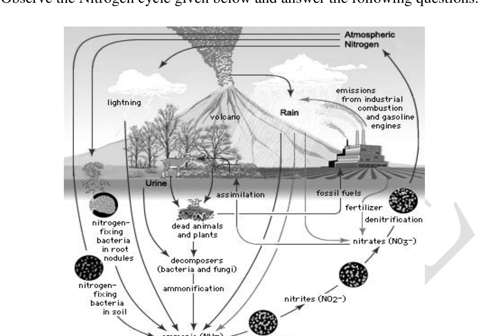
i. Beginning with free atmospheric nitrogen, arrange the following processes of nitrogen cycle in a proper order. [1 Mark]
- (a) Ammonification
- (b) Nitrogen fixation
- (c) Denitrification
- (d) Nitrification
ii. State whether the following statements are true (T) or false (F). [3 Marks]
a) Plants get their nitrogen supply as nitrates and ammonium ions dissolved in water. b) Ammonification refers to conversion of free nitrogen to ammonia. c) Nitrogen is fixed only by microorganisms. d) Rhizobium and Azotobacter are both found in root nodules of leguminous plants. e) Much of the efforts of nitrogen fixing organisms are neutralized by the action of denitrifying bacteria. f) Volcanic eruption adds free nitrogen to the atmosphere.
iii. If, in an experiment, all Nitrogenase enzymes in a field are inactivated by irradiation, what will be the immediate vital effect of it? [0.5 Marks]
- (a) No Fixation of nitrogen in leguminous plants of the field.
- (b) No Fixation of atmospheric nitrogen at all.
- (c) No Conversion of nitrate to nitrite in leguminous plants of the field.
- (d) No Conversion of nitrates to ammonia in soil of the field.
iv. Plants having mutualistic relation with nitrogen fixing bacteria would receive nitrogen in the form of __________ from the bacteria. [0.5 Marks]
- (a) Ammonium ions
- (b) Amino acids
- (c) Nitrates
- (d) Nitrites
Topic: Earth & Environmental Science Metodi: Physical Modeling Competenze: Physical Reasoning Objects: — Fonte: Testo (PDF) — p.18
Osservate il ciclo di azoto riportato di seguito e risponda alle seguenti domande.
Quesito 63
i. A partire dal azoto atmosferico libero, organizzare in ordine il seguente ciclo di azoto. [1 Marchio]
- a) Ammonificazione
- b) fissazione dell’azoto
- c) Denitrificazione
- d) Nitrificazione
ii. Indicare se le seguenti affermazioni sono vere (T) o false (F). ** [3 Marchi] **
a) Le piante ottengono il loro approvvigionamento di azoto come ioni di nitrati e di ammonio disciolti in acqua. b) L’ammonificazione si riferisce alla conversione dell’azoto libero in ammoniaca. c) L’azoto è fissato solo dai microrganismi. d) Rhizobium e Azotobacter si trovano entrambi nei noduli radiciali delle piante leguminose. e) Gran parte degli sforzi degli organismi di fissaggio dell’azoto sono neutralizzati dall’azione dei batteri denitrificanti. f) L’eruzione vulcanica aggiunge azoto libero all’atmosfera.
Se, in un esperimento, tutti gli enzimi di nitrogenaze in un campo sono inattivi con irradiazione, quale sarà l’effetto vitale immediato? [0,5 punti]
- a) Nessuna fissazione di azoto nelle piante leguminose del campo.
- b) Nessuna fissazione dell’azoto atmosferico.
- c) Nessuna conversione di nitrato in nitrito nelle piante leguminose del campo.
- d) Nessuna conversione di nitrati in ammoniaca nel suolo del campo.
Le piante che hanno una relazione mutuale con i batteri fissatori di azoto riceveranno azoto sotto forma di __________ dai batteri. [0,5 punti]
- a) Ioni di ammonio
- b) Aminoacidi
- (c) Nitrati
- d) Nitriti
Topic: Earth & Environmental Science Metodi: Physical Modeling Competenze: Physical Reasoning Objects: — Fonte: Testo (PDF) — p.18
(10 %) The mass percent of in a sample of a mineral is determined by reacting it with a measured excess of in acid solution, and then titrating the remaining with standard . A 0.225 g sample of the mineral is ground and boiled with 75.0 mL of 0.0125 M solution containing 10mL of concentrated sulfuric acid. After the reaction is complete, the solution is cooled, diluted with water, and titrated with 2.25 ×10⁻² M , requiring 16.00ml to reach the endpoint.
Note: 5 mol of react with 4mol of .
i. Write a balanced equation for the reaction of with in acid solution. The products are and . [1Mark]
ii. Calculate the number of moles of i. added initially. [1 Mark] ii. used to titrate the excess . [1 Mark] iii. in the sample. [1 Mark]
iii. Determine the mass percent of in the sample. [0.5 Marks]
iv. Describe how the endpoint is reflected in the titration [0.5 Marks]
Topic: Chemistry Metodi: Statistical Averaging Competenze: Unit Conversion Objects: — Fonte: Testo (PDF) — p.19
(10 %) La percentuale di massa di in un campione di un minerale è determinata reagendo con un eccesso misurato di in soluzione acida, e quindi titolatando il restante con standard . Un campione di 0,225 g del minerale è macinato e bollito con 75,0 ml di soluzione di 0,0125 M contenente 10 ml di acido solforico concentrato. Dopo che la reazione è completata, la soluzione viene raffreddata, diluita con acqua e titolata con 2.25 ×10−2 M , richiedendo 16,00 ml per raggiungere il punto di fine.
Nota: 5 mol di reagiscono con 4 mol di .
i. Scrivere un’equazione equilibrata per la reazione di con in soluzione acida. I prodotti sono e . [1Mark]
ii. Calcolare il numero di molli di i. aggiunto all’inizio. [1 Marchio] ii. utilizzato per titolare l’eccesso . [1 Marchio] iii. nel campione. [1 Marchio]
iii. Determinare la percentuale di massa di nel campione. [0,5 punti]
iv. Descrivere come il punto di destinazione si riflette nella titolazione [0,5 Marchi]
Topic: Chemistry Metodi: Statistical Averaging Competenze: Unit Conversion Objects: — Fonte: Testo (PDF) — p.19
A particle is moving on the real line, and its position is observed at four different time stamps. At time , the particle is at , at time seconds, we have , at time seconds, and at time seconds, we have . Show that at some point of time between 0 and 60 seconds, the acceleration of the particle was zero. [5 Marks]
Topic: Newtonian Mechanics, Mathematics Metodi: Kinematic Equations Competenze: Mathematical Modeling Objects: — Fonte: Testo (PDF) — p.19
Una particella si muove sulla linea reale e la sua posizione viene osservata a quattro stampi temporali diversi. Al tempo , la particella è a , al tempo secondi, abbiamo , al tempo secondi, e al tempo secondi, abbiamo . Mostrate che a un certo punto di tempo tra 0 e 60 secondi, l’accelerazione della particella era zero. ** [5 Marchi] **
Topic: Newtonian Mechanics, Mathematics Metodi: Kinematic Equations Competenze: Mathematical Modeling Objects: — Fonte: Testo (PDF) — p.19
a. In the Panchatantra stories, one of the popular stories is where a crow sits on a pot partially filled with water. Crow could not reach up to the water level and so decides to put in some stones so that the water level rises up to a point from where crow could drink the water. Let us see if this is possible.
Assume that the container is rectangular in shape with base of 10 cm x 20 cm and height of 30 cm. Crow has marbles of radius 1 cm to pack the container. Crow packs the base of the container tightly with a set of marbles. All the subsequent layers are similar.
i. What should be the initial level of water such that any kind of packing will certainly bring the water level up to the brim of the container so that it can drink the water? [2Marks]
ii. What is the minimum number of marbles required to do the job? [1Mark]
b. Comet ISON, which several astronomy enthusiasts had hoped would be the ‘comet of the century’, recently disappointed sky observers by breaking apart before reaching its peak brightness, rendering it too dim to be visible by the naked eye. In this problem we will consider a simplistic model to try and model the breakup of the comet.
The breakup of the comet was attributed to the strong effect of tidal forces acting on the comet due to the sun. These are the same tidal forces that lead to the commonly observed effect of tides on the earth. Tidal forces are nothing but a result of the difference of the gravitational attraction at the two ends of the object.
Quesito 66
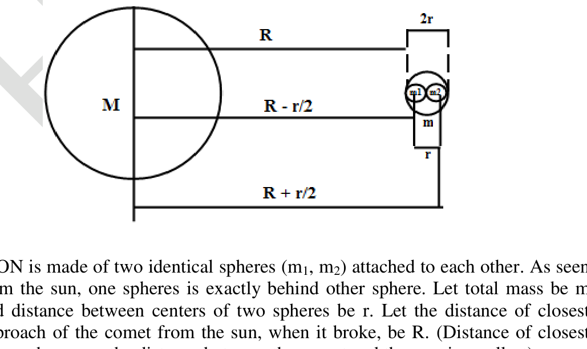
ISON is made of two identical spheres (, ) attached to each other. As seen from the sun, one spheres is exactly behind other sphere. Let total mass be m and distance between centers of two spheres be r. Let the distance of closest approach of the comet from the sun, when it broke, be R. (Distance of closest approach means, the distance between the comet and the sun, is smallest).
i. What is the mutual gravitation force by two spheres on each other? [0.25Marks]
ii. What gravitation force of sun on closer sphere? [0.25Marks]
iii. By comparing the difference in forces on each of the 2 halves, with respect to the mutual force between the two halves, give a relation by governing when the comet would break up. [1.5Marks]
iv. Convert this relation to find an upper limit on the density of the comet. [1Marks]
Topic: Order-of-Magnitude Estimation, Astrophysics Metodi: Order-of-Magnitude Estimation Competenze: Estimation & Approximation Objects: Container, Sphere, Star Fonte: Testo (PDF) — p.20
Nelle storie del Panchatantra, una delle storie popolari è dove un corvo siede su un vaso parzialmente riempito di acqua. Il corvo non riuscì a raggiungere il livello dell’acqua e così decise di mettere alcune pietre in modo che il livello dell’acqua saliva fino a un punto da cui il corvo poteva bere l’acqua. Vediamo se questo è possibile.
Supponiamo che il contenitore sia rettangolare, con una base di 10 cm x 20 cm e un’altezza di 30 cm. Il corvo ha marmi di 1 cm di raggio per imballare il contenitore. Il corvo imballa la base del contenitore con un insieme di marmi. Tutti gli strati successivi sono simili.
Qual è il livello iniziale dell’acqua in modo tale che ogni imballaggio porti il livello dell’acqua al bordo del contenitore in modo che possa bere l’acqua? ** [2Marchi] **
ii. Qual è il numero minimo di marmi necessari per svolgere il lavoro? [1Mark]
La cometa ISON, che molti appassionati di astronomia speravano sarebbe stata la “cometa del secolo”, ha recentemente deluso gli osservatori del cielo rompendosi prima di raggiungere il suo massimo brillantezza, rendendola troppo scura da vedere ad occhio nudo. In questo problema considereremo un modello semplicistico per cercare di modellare la rottura della cometa.
La rottura della cometa fu attribuita al forte effetto delle forze di marea che agiscono sulla cometa a causa del sole. Queste sono le stesse forze delle maree che portano all’effetto comunemente osservato delle maree sulla terra. Le forze di marea non sono altro che il risultato della differenza di attrazione gravitazionale alle due estremità dell’oggetto.
Quesito 66
ISON è costituito da due sfere identiche (, ) unite tra loro. Come visto dal sole, una sfera è esattamente dietro l’altra sfera. La massa totale è m e la distanza tra i centri di due sfere è r. La distanza di avvicinamento più vicino della cometa al sole, quando si è rotta, sia R. (Distanza di avvicinamento più vicino significa, la distanza tra la cometa e il sole, è più piccola).
Qual è la forza gravitazionale reciproca di due sfere una sull’altra? [0,25Marchi]
Qual è la forza gravitazionale del sole su una sfera più vicina? [0,25Marchi]
M.S.K.1/> Confrontando la differenza di forze su ciascuna delle due metà, rispetto alla forza reciproca tra le due metà, si può stabilire una relazione che regna quando la cometa si dissolverà. [1,5 punti]
iv. Convertire questa relazione per trovare un limite superiore della densità della cometa. [1Marchi]
Topic: Order-of-Magnitude Estimation, Astrophysics Metodi: Order-of-Magnitude Estimation Competenze: Estimation & Approximation Objects: Container, Sphere, Star Fonte: Testo (PDF) — p.20
The purpose of an air bag is to slow the passenger’s forward movement into the steering wheel (or dash board) during a collision and also to provide a cushion between the passenger and the steering wheel. The goal of an air bag is to help the passenger come to a stop with minimum damage. One of the ways an air bag helps reduce injury is by spreading the force of impact with the dashboard or steering wheel over a larger area, as illustrated in Figure 1. When the force is spread over a larger area of the body, the injuries are less severe.
Quesito 67
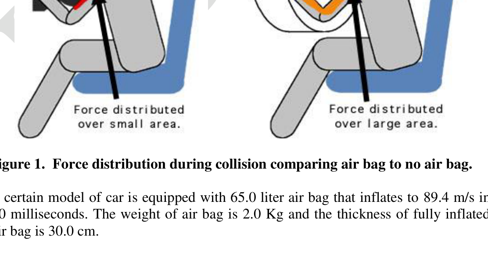
A certain model of car is equipped with 65.0 liter air bag that inflates to 89.4 m/s in 40 milliseconds. The weight of air bag is 2.0 Kg and the thickness of fully inflated air bag is 30.0 cm.
One method used to inflate an air bag in cars is to use nitrogen produced chemically from the decomposition of sodium azide.
The sodium formed reacts with potassium nitrate to give more nitrogen:
i. Calculate the ratio (by mass) in which the sodium azide and potassium nitrate should be mixed in order that no metallic sodium remains after the reaction. [1 Mark]
ii. Write the record of with sodium oxide and potassium oxide. [0.5 Marks]
iii. Calculate the total mass of the solid mixture of sodium azide and potassium nitrate needed to inflate a 72 dm³ air bag is filled with nitrogen gas at of 3 atm and at room temperature (27°C). Consider the molar volume of nitrogen gas as 24.0 dm³ at 300 K and universal gas constant, R = 0.0821 liter. atm.mole. K⁻¹. (Important: Show all your calculation step clearly) [2 Marks]
The sodium azide is prepared commercially by the reaction between dinitrogen monoxide and sodium amide.
iv. Calculate for reaction (1) above, the decomposition of sodium azide. [1.5 Mark]
Given:
| Compound | ||||
|---|---|---|---|---|
| (KJ/mol) | +82.0 |
Topic: Conservation of Momentum, Chemistry Metodi: Impulse-Momentum Theorem Competenze: Unit Conversion Objects: Gas Fonte: Testo (PDF) — p.21
Lo scopo di un airbag è quello di rallentare il movimento del passeggero verso il volante (o il tabellone di controllo) durante una collisione e di fornire anche un cuscino tra il passeggero e il volante. L’obiettivo di un airbag è aiutare il passeggero a fermarsi con il minimo danno. Uno dei modi in cui un airbag aiuta a ridurre le lesioni è distribuire la forza di impatto con il cruscotto o il volante su una superficie più ampia, come illustrato nella Figura 1. Quando la forza si diffonde su una zona più ampia del corpo, le lesioni sono meno gravi.
Quesito 67
Un certo modello di auto è dotato di un airbag da 65,0 litri che gonfia a 89,4 m/s in 40 millisecondi. Il peso della borsa ad aria è di 2,0 kg e lo spessore della borsa ad aria completamente gonfiata è di 30,0 cm.
Un metodo utilizzato per gonfiare un airbag in auto è quello di utilizzare azoto prodotto chimicamente dalla decomposizione dell’azido di sodio.
Il sodio formato reagisce con il nitrato di potassio per dare più azoto:
i. Calcolare il rapporto (per massa) in cui l’azido di sodio e il nitrato di potassio devono essere mescolati in modo che non rimanga sodio metallico dopo la reazione. [1 Marchio]
ii. Scrivere il record di con ossido di sodio e ossido di potassio. **[0,5 punti] **
iii. Calcolare la massa totale della miscela solida di azido di sodio e nitrato di potassio necessaria per gonfiare un airbag di 72 dm3 riempito di gas azoto a 3 atm e a temperatura ambiente (27°C). Considera il volume molare del gas azoto come 24,0 dm3 a 300 K e costante universale del gas, R = 0,0821 litri. ATM.mole. K⁻¹. (Importante: indicare chiaramente tutti i vostri passi di calcolo) [2 Marchi]
L’azide di sodio è preparato commercialmente dalla reazione tra monossido di nitrogeno e amide di sodio.
iv. Calcolare per la reazione (1) sopra, la decomposizione dell’azido di sodio. [1.5 Marchio]
Date:
| Compound | ||||
|---|---|---|---|---|
| (KJ/mol) | +82.0 |
Topic: Conservation of Momentum, Chemistry Metodi: Impulse-Momentum Theorem Competenze: Unit Conversion Objects: Gas Fonte: Testo (PDF) — p.21
Pradip lives in an apartment on floor of a 6 storey building in Mumbai. It has an overhead water tank which is just above the floor. It is kept always full by an automatic pump. He loves to have bath in hot water at 35°C, even in summer even when the outside temperature is 30° C. He uses a 3000 watt instant water heater for his shower. The hot and cold water taps in his bathroom are similar, and each can only be in the ON or the OFF state. In the summer he has to open the cold water tap allowing equal volume of cold water to be mixed with the output of the heater. As he believes in the water conservation theory of Hugo Chavez, former president of Venezuela, he completes his shower exactly in 3.5 min.
i. Estimate the temperature of the water flowing out of the heater. (Assume no heat is lost when the water flows through the pipe to the shower). [0.5 marks]
ii. What is the rate of flow of water into the water heater fitted on the floor of the building? [1 mark]
iii. How much water does Pradip use for every shower? [0.5 marks]
iv. In winter the outside temperature is 25°C. Keeping the water flow rate into the heater the same as in the summer, to what extent he should open the cold water tap (if it is possible to control the flow) to get the same temperature shower as in the summer? [1 mark]
v. Vinayak lives on the second floor of the same building. Both Vinayak and Pradip have identical taps and heaters. Assuming all other physical conditions are identical, if Vinayak maintains the taps open or closed through the year following the same pattern as Pradip, then what are the temperatures of water Vinayak receives in the summer and winter? [2 mark]
Topic: Thermodynamics Metodi: First Law of Thermodynamics Competenze: Estimation & Approximation Objects: Container, Tube Fonte: Testo (PDF) — p.23
Pradip lives in an apartment on floor of a 6 storey building in Mumbai. Dispone di un serbatoio di acqua a cielo aperto situato poco sopra il pavimento . È tenuto sempre pieno da una pompa automatica. Gli piace fare il bagno in acqua calda a 35°C, anche in estate, anche quando la temperatura esterna è 30°C. Usa un riscaldatore d’acqua istantaneo da 3000 watt per la doccia. I rubinetti di acqua calda e fredda nel suo bagno sono simili, e ognuno può essere solo in stato di ON o OFF. In estate deve aprire il rubinetto di acqua fredda consentendo di mescolare un volume uguale di acqua fredda con la produzione del riscaldatore. Come crede nella teoria della conservazione dell’acqua di Hugo Chavez, ex presidente del Venezuela, completa la doccia in esattamente 3,5 minuti.
i. Estimare la temperatura dell’acqua che esce dal riscaldatore. (Supponiamo che non si perda calore quando l’acqua scorre attraverso il tubo fino alla doccia). [0,5 punti]
ii. Qual è il tasso di flusso d’acqua nel riscaldatore installato sul pavimento dell’edificio? [1 segno]
iii. Quanta acqua Pradip utilizza per ogni doccia? [0,5 punti]
iv. In winter the outside temperature is 25°C. Tenendo il flusso d’acqua nel riscaldatore lo stesso che in estate, in che misura dovrebbe aprire il rubinetto d’acqua fredda (se è possibile controllare il flusso) per ottenere la stessa doccia a temperatura che in estate? [1 segno]
v. Vinayak lives on the second floor of the same building. Sia Vinayak che Pradip hanno rubinetti e riscaldatori identici. Supponendo che tutte le altre condizioni fisiche siano identiche, se Vinayak mantiene le rubine aperte o chiuse durante tutto l’anno seguendo lo stesso modello di Pradip, allora quali sono le temperature dell’acqua che Vinayak riceve in estate e in inverno? ** [2 segno]**
Topic: Thermodynamics Metodi: First Law of Thermodynamics Competenze: Estimation & Approximation Objects: Container, Tube Fonte: Testo (PDF) — p.23